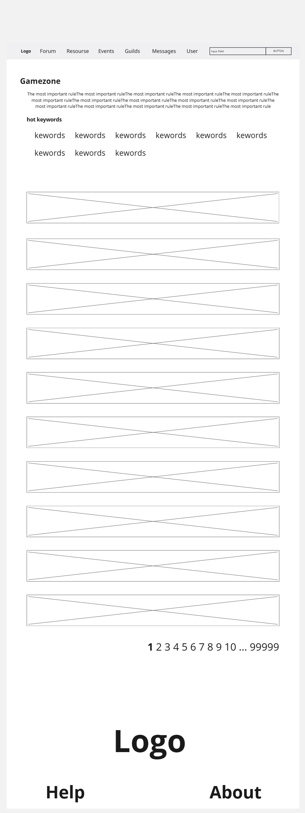
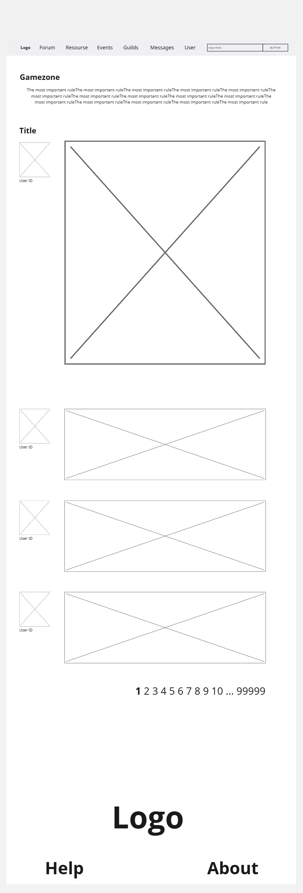

Site Map
This page provides an overview of all the pages on our site, so you can quickly navigate to where you need to go.
Diagram of Post-it Notes And Sitemap
便利贴示意图以及站点图
首页（Home Page）
用途 （Purpose）
- 向新访客和注册用户展示网站的整体架构、最新公告和热门事件概览。
- Provide new and returning users with an overview of the site structure, latest announcements, and featured events.
- 向新访客和注册用户展示网站的整体架构、最新公告和热门事件概览。
- Provide new and returning users with an overview of the site structure, latest announcements, and featured events.
关键功能与交互 （Key Features & Interactions）
- Logo 单击 → 返回首页
- Logo click → Return to Home
- 导航菜单（Forum、Resources、Events、Guilds、Messages、User、Help、About）
- Hover or tap to reveal sub-items.
- 搜索栏
- 输入关键词，实时过滤帖子或资源。Search bar
- Type keywords to filter posts or resources in real time.
- 热门事件大图
- 静态展示当期最重要公告，点击查看详情。 Featured Event Banner
- Static display of the most important announcement; click to view details.
- 游戏分类缩略图
- RPG/FPS/RTS 等类型代表作，点击进入对应版块。 Game Category Thumbnails
- Represented by iconic games (e.g., CSGO for FPS, StarCraft for RTS); click to enter category.
- 公告栏
- 按时间倒序滚动显示最新网站新闻。 News Ticker
- Scrolling list of site updates, sorted newest first.
- Help & About 子菜单
- 弹出意见反馈表单、功能指南、团队介绍。 Help & About submenu
- Opens feedback form, usage guide, and team info.
- 用户：快速定位感兴趣内容，Logo 返回降低迷失感。
- Users: Quickly find desired content; logo-to-home reduces disorientation.
- 客户（站方）：精准发布公告与活动，收集用户反馈。
- Clients (Site Admins): Precisely convey announcements and events; gather user feedback.
- ARIA
- 搜索框 。
- 键盘导航
- 所有链接、按钮可使用 Tab/Enter 操作。 Keyboard Support
- All links and buttons operable via Tab/Enter.
- 对比度
- 文本与背景对比度 ≥ 4.5:1。 Contrast
- Text-to-background ratio ≥ 4.5:1.
- 图片替代文本
- 缩略图 alt 标签描述清晰。 Alt Text
- Clear alt attributes on all thumbnails. 
- 展示某一游戏类别下的帖和相关资源，帮助用户在细分社区中浏览与互动。
- Display all posts and resources within a specific game category, enabling focused browsing and participation.
- 置顶规则条
- 红底高亮社区规范（如“禁止游戏歧视”），始终可见。 Pinned Rules Bar
- Red-highlighted community rules (e.g., “No game discrimination”), always visible.
- Hot Keywords
- 根据标签频次生成关键词云；点击即刻过滤列表。 Hot Keywords
- Tag-frequency keyword cloud; click to filter list instantly.
- 帖子列表
- 倒序排序，悬停显示摘要预览、点赞/回复按钮。 Post List
- Sorted newest first; hover to preview snippet and show like/reply buttons.
- 资源板块
- Creative Workshop、Mod 分享，经管理员审核后上线。 Resource Section
- Creative Workshop, Mods sharing; admin-approved before going live.
- 用户：
- “规则条”提醒社区规范； “Hot Keywords”加速定位感兴趣话题； 摘要预览减少无效点击。
- Users:
- Rules bar reinforces norms; Hot Keywords speed topic discovery; Snippet preview reduces wasted clicks.
- 客户：
- 建立健康社区文化； 热点标签数据助运营决策； 管理员可监控并审核内容。
- Clients:
- Foster positive community culture; Keyword analytics support operations; Admin oversight of submitted content.
- ARIA
- 规则条
- 关键词用
- Rules bar wrapped in
- Keywords as
- 键盘/触屏
- 列表项目可用箭头键导航，Enter 展开详情。 Keyboard/Touch
- Arrow keys navigate items; Enter expands details.
- 对比度
- 置顶条红白对比 ≥ 3:1；关键词聚焦态加深阴影。 Contrast
- Red/white ratio ≥ 3:1; focused keywords show stronger shadow.
- 屏幕阅读器
- 列表区域 role="feed"，新帖触发 aria-live="polite"。 Screen Reader
- List has role="feed"; new posts announced via aria-live="polite". 
- 展示单一帖子的完整内容与评论，支持用户深入讨论与私信。
- Show the full content and comments of a single post, enabling in-depth discussion and private messaging.
- 用户信息栏（左侧）
- 显示发帖人/回帖人头像、ID、等级、发帖／点赞统计；点击跳转用户主页。 User Info Panel (Left)
- Shows avatar, ID, level, post/like stats; click to visit profile.
- 内容区（右侧）
- 支持富文本（图片、代码、链接），点赞、收藏、回复按钮；
- 评论树状折叠，可展开／收起回复。 Content Area (Right)
- Rich text support (images, code, links), like/bookmark/reply;
- Collapsible threaded comments.
- 私信按钮
- 在用户栏启动私聊对话框，可拖拽、键盘关闭(Esc)。 PM Button
- Opens draggable private chat modal; closable via Esc.
- 快速导航
- Logo/面包屑/浏览器后退；Alt+← 快捷返回。 Quick Navigation
- Logo/breadcrumbs/browser back; Alt+← keyboard shortcut.
- 用户：
- 直观了解作者和评论者背景； 富媒体增强表达； 私信功能提升社区粘性。
- Users:
- Quickly gauge poster/replier credibility; Rich media enriches expression; PM fosters community engagement.
- 客户：
- 私信和互动数据用于活跃度分析； 评论结构帮助自动化审核。
- Clients:
- Messaging and interaction metrics drive engagement analytics; Threaded comments aid moderation automation.
- ARIA
-
<article role="article" aria-labelledby="post-title">
包裹主帖内容。
Main post wrapped in<article role="article" aria-labelledby="post-title">. -
<section role="region" aria-label="Comments">
包裹评论区。
Comments section wrapped in<section role="region" aria-label="Comments">. -
回复按钮需带
aria-expanded="false/true"属性，反映折叠或展开状态。
Reply buttons usearia-expanded="false/true"to indicate collapsed/expanded state.
-
- 对比度 & 可视焦点（Contrast & Focus）
- 按钮和链接在聚焦时应有清晰的焦点轮廓。
Buttons and links should display a clear focus outline when focused. - 头像与正文文本的对比度应 ≥ 4.5:1。
Avatar and text contrast ratio should be ≥ 4.5:1.
- 按钮和链接在聚焦时应有清晰的焦点轮廓。
- 键盘操作（Keyboard Operability）
- 按
Esc键可关闭私信对话框。
PressEscto close the private message modal. - 按
Space键可折叠/展开评论线程。
PressSpaceto toggle comment threads.
- 按
- 动态通知（Live Updates）
- 新回复应使用
aria-live="polite"通知屏幕阅读器。
New replies should be announced to screen readers usingaria-live="polite".
- 新回复应使用